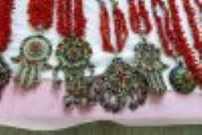
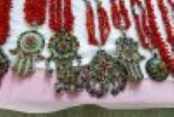

Foire aux questions
- Q1 : Quelle est l'origine des Amazighs ?
- R1 : Les Amazighs, aussi connus sous le nom de Berbères, sont les habitants autochtones de l'Afrique du Nord, avec une histoire remontant à plusieurs millénaires.
- Q2 : Quelle est la langue parlée par les Amazighs ?
- R2 : Les Amazighs parlent le tamazight, qui comprend plusieurs dialectes.
- Q3 : Quelles sont les principales fêtes célébrées par les Amazighs ?
- R3 : Yennayer, le Nouvel An amazigh, est l'une des fêtes les plus importantes.
- Q4 : Quels sont les éléments typiques de l'artisanat amazigh ?
- R4 : L'artisanat amazigh est célèbre pour ses tapis, bijoux en argent et poteries.
- Q5 : Où peut-on en apprendre plus sur la culture amazigh ?
- R5 : Vous pouvez visiter des musées, lire des livres et consulter des sites web dédiés à la culture amazigh.
 
